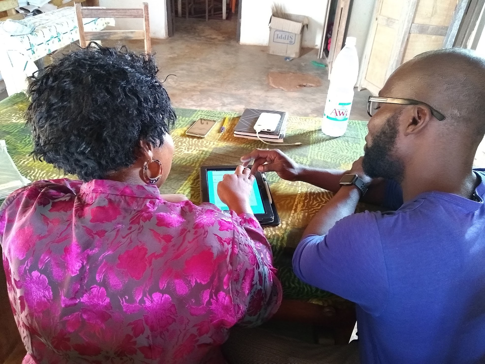

    <!--background color-->
    <script type="text/javascript">
        document.write ('<body style="background: Gainsboro; background-attachment: fixed;">')
    </script>

    <section id="conference" class="black-frame about about-container about-container-top">
      <h1>{{ page.title }}</h1>

      <div class="icon-about">
        
      </div>

      <h2 class="third">Mission</h2>

      <p> We are working to aid in the implementation of the Teaching at the Right Level
        curriculum in the Côte d'Ivoire.
      </p>

      
      <h2 class="first">Objectives</h2>

      <p>Your Objective</p>
    </section>
